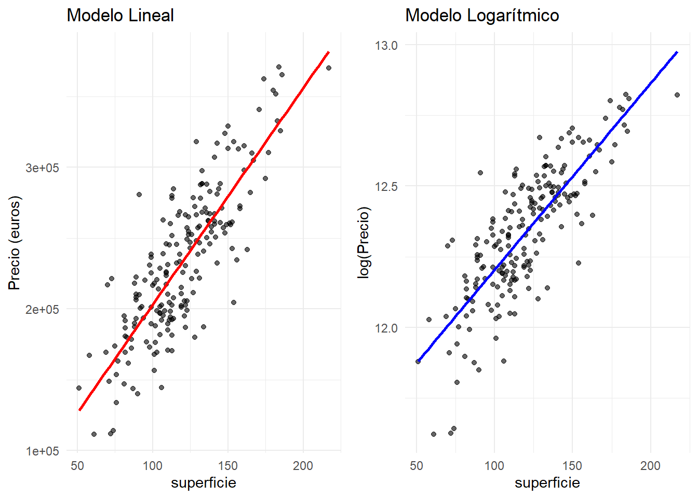
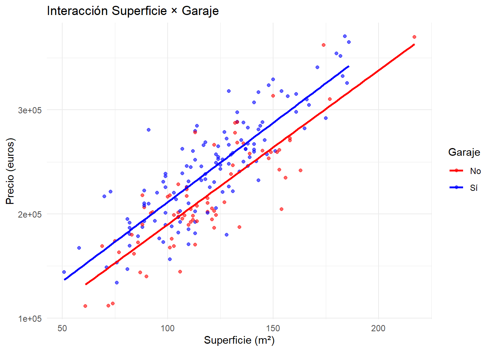
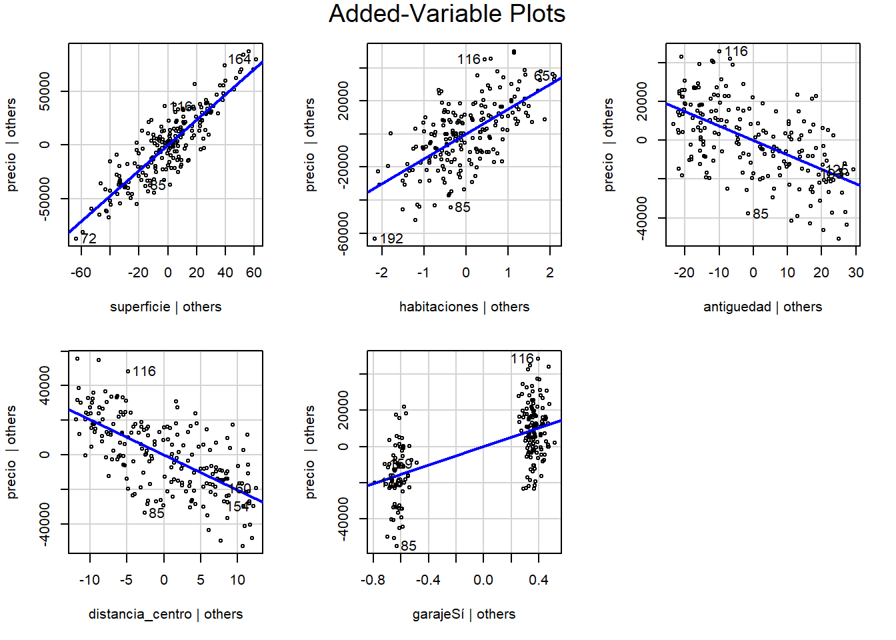

El modelo de regresión lineal múltiple constituye la extensión natural y más potente del modelo simple que estudiamos en el capítulo anterior. Mientras que la regresión simple nos permitía examinar la relación entre una variable respuesta y un único predictor, la regresión múltiple nos capacita para modelar simultáneamente el efecto de múltiples variables predictoras, una situación mucho más realista en la mayoría de aplicaciones prácticas (Kutner et al. 2005; James et al. 2021; Fox y Weisberg 2018).
En este capítulo profundizaremos en los aspectos únicos de la regresión múltiple que no están presentes en el caso simple: la interpretación de coeficientes en presencia de otros predictores, las transformaciones de variables para capturar relaciones no lineales, las interacciones entre variables, el diagnóstico específico del modelo múltiple, y el problema crucial de la multicolinealidad. Estos conceptos son fundamentales para desarrollar modelos predictivos robustos y interpretables (Harrell 2015; Draper 1998).
La comprensión sólida de estos principios es esencial, ya que constituyen la base conceptual sobre la que se construyen técnicas más avanzadas como la selección de variables (Tema 3), los modelos lineales generalizados (Tema 4), y las tendencias modernas en modelado estadístico (Tema 5).
Objetivos de aprendizaje
Al finalizar este capítulo, serás capaz de:
Formular y estimar modelos de regresión lineal múltiple, comprendiendo las diferencias clave respecto al caso simple.
Interpretar coeficientes en el contexto multivariante, entendiendo el concepto de “manteniendo las demás variables constantes”.
Aplicar transformaciones de variables para capturar relaciones no lineales y mejorar el ajuste del modelo.
Modelar e interpretar interacciones entre variables predictoras y entender cuándo son necesarias.
Diagnosticar el modelo múltiple, aplicando técnicas específicas para detectar problemas únicos del caso multivariante.
Identificar y tratar la multicolinealidad, comprendiendo sus causas, consecuencias y soluciones.
Evaluar y comparar modelos múltiples usando criterios apropiados para la selección del mejor modelo.
3.1 Conceptos fundamentales
3.1.1 Del modelo simple al múltiple: Una perspectiva teórica
El modelo de regresión lineal múltiple representa una extensión natural pero conceptualmente rica del modelo simple. Para \(n\) observaciones y \(p\) variables predictoras, el modelo se expresa como:
donde: - \(Y_i\) es la \(i\)-ésima observación de la variable respuesta - \(X_{ij}\) es la \(i\)-ésima observación de la \(j\)-ésima variable predictora - \(\beta_0, \beta_1, ..., \beta_p\) son los parámetros del modelo - \(\varepsilon_i\) es el término de error para la \(i\)-ésima observación
3.1.2 Formulación matricial del modelo
La representación matricial es fundamental para el desarrollo teórico:
Este supuesto no es necesario para las propiedades BLUE de los estimadores, pero sí para la inferencia estadística exacta.
3.1.4 Geometría de la regresión múltiple
3.1.4.1Espacios vectoriales
En regresión múltiple, trabajamos en el espacio \(\mathbb{R}^n\):
El vector de observaciones \(\mathbf{y} \in \mathbb{R}^n\)
Cada columna de \(\mathbf{X}\) (incluyendo el vector de unos) genera un subespacio
El espacio columna de \(\mathbf{X}\), denotado \(C(\mathbf{X})\), es el subespacio generado por las columnas de \(\mathbf{X}\)
3.1.4.2Proyección ortogonal
El vector de valores ajustados \(\hat{\mathbf{y}} = \mathbf{X}\hat{\boldsymbol{\beta}}\) es la proyección ortogonal de \(\mathbf{y}\) sobre \(C(\mathbf{X})\):
Como \(\mathbf{X}^T\mathbf{X}\) es positiva definida (bajo el supuesto de rango completo), \(\hat{\boldsymbol{\beta}}\) es efectivamente un mínimo global.
3.2.2 Propiedades de los estimadores
3.2.2.1Teorema de Gauss-Markov
Enunciado: Bajo los supuestos 1-5, los estimadores de mínimos cuadrados \(\hat{\boldsymbol{\beta}}\) son BLUE (Best Linear Unbiased Estimators).
Varianza: \(\text{Var}(\hat{Y}_i) = \sigma^2 \mathbf{h}_{ii}\) donde \(\mathbf{h}_{ii} = \mathbf{x}_i^T(\mathbf{X}^T\mathbf{X})^{-1}\mathbf{x}_i\)
Covarianza con residuos: \(\text{Cov}(\hat{Y}_i, e_i) = 0\)
3.2.5.3Descomposición de varianza
Teorema de Pitágoras en regresión: \[\|\mathbf{y}\|^2 = \|\hat{\mathbf{y}}\|^2 + \|\mathbf{e}\|^2\]
En términos de sumas de cuadrados: \[\sum_{i=1}^n (Y_i - \bar{Y})^2 = \sum_{i=1}^n (\hat{Y}_i - \bar{Y})^2 + \sum_{i=1}^n e_i^2\]
\[\boxed{SST = SSR + SSE}\]
donde: - \(SST = \sum_{i=1}^n (Y_i - \bar{Y})^2\) (suma total de cuadrados) - \(SSR = \sum_{i=1}^n (\hat{Y}_i - \bar{Y})^2\) (suma de cuadrados de la regresión) - \(SSE = \sum_{i=1}^n e_i^2\) (suma de cuadrados del error)
Superficie: Por cada m² adicional, el precio aumenta en promedio 1172 euros, manteniendo constantes las demás variables.
Habitaciones: Cada habitación adicional incrementa el precio en 1.5072^{4} euros en promedio, ceteris paribus.
Antigüedad: Por cada año de antigüedad, el precio disminuye en 745 euros en promedio.
Distancia al centro: Cada km adicional de distancia reduce el precio en 2028 euros en promedio.
Garaje: Las viviendas con garaje cuestan 2.5829^{4} euros más que las que no tienen, en promedio.
3.4 Transformaciones de variables
Las transformaciones nos permiten capturar relaciones no lineales entre las variables manteniendo la estructura del modelo lineal. Las transformaciones más comunes incluyen logarítmicas, polinomiales, y de raíz cuadrada.
3.4.1 Transformación logarítmica
La transformación logarítmica es útil cuando esperamos efectos multiplicativos o cuando la variabilidad de la respuesta aumenta con su nivel:
# Modelo con transformación logarítmica del preciomodelo_log <-lm(log(precio) ~ superficie + habitaciones + antiguedad + distancia_centro + garaje, data = viviendas)# Comparación gráficap1 <-ggplot(viviendas, aes(x = superficie, y = precio)) +geom_point(alpha =0.6) +geom_smooth(method ="lm", se =FALSE, color ="red") +labs(title ="Modelo Lineal", y ="Precio (euros)") +theme_minimal()p2 <-ggplot(viviendas, aes(x = superficie, y =log(precio))) +geom_point(alpha =0.6) +geom_smooth(method ="lm", se =FALSE, color ="blue") +labs(title ="Modelo Logarítmico", y ="log(Precio)") +theme_minimal()grid.arrange(p1, p2, ncol =2)
`geom_smooth()` using formula = 'y ~ x'
`geom_smooth()` using formula = 'y ~ x'

Comparación entre modelo lineal y logarítmico para la relación precio-superficie
3.4.2 Transformación polinomial
Los términos polinomiales capturan relaciones curvilíneas:
# Modelo con término cuadrático para superficiemodelo_poly <-lm(precio ~ superficie +I(superficie^2) + habitaciones + antiguedad + distancia_centro + garaje, data = viviendas)summary(modelo_poly)$coefficients
Las interacciones permiten que el efecto de una variable predictora dependa del nivel de otra variable. Son especialmente importantes cuando las variables actúan de manera sinérgica.
3.5.1 Concepto de interacción
Una interacción entre \(X_1\) y \(X_2\) se modela como:
3.5.3 Interacción entre variable continua y categórica
# Modelo con interacción superficie × garajemodelo_int_garaje <-lm(precio ~ superficie * garaje + habitaciones + antiguedad + distancia_centro, data = viviendas)summary(modelo_int_garaje)
Call:
lm(formula = precio ~ superficie * garaje + habitaciones + antiguedad +
distancia_centro, data = viviendas)
Residuals:
Min 1Q Median 3Q Max
-39256 -9688 1116 10185 38051
Coefficients:
Estimate Std. Error t value Pr(>|t|)
(Intercept) 63328.67 9182.22 6.897 7.4e-11 ***
superficie 1093.31 70.12 15.593 < 2e-16 ***
garajeSí 10987.33 10095.82 1.088 0.278
habitaciones 15060.02 1299.15 11.592 < 2e-16 ***
antiguedad -751.04 75.29 -9.975 < 2e-16 ***
distancia_centro -2039.14 164.49 -12.397 < 2e-16 ***
superficie:garajeSí 124.87 82.62 1.511 0.132
---
Signif. codes: 0 '***' 0.001 '**' 0.01 '*' 0.05 '.' 0.1 ' ' 1
Residual standard error: 15900 on 193 degrees of freedom
Multiple R-squared: 0.9105, Adjusted R-squared: 0.9077
F-statistic: 327.1 on 6 and 193 DF, p-value: < 2.2e-16
# Visualización de la interacciónggplot(viviendas, aes(x = superficie, y = precio, color = garaje)) +geom_point(alpha =0.6) +geom_smooth(method ="lm", se =FALSE, formula = y ~ x) +labs(title ="Interacción Superficie × Garaje",x ="Superficie (m²)", y ="Precio (euros)",color ="Garaje") +theme_minimal() +scale_color_manual(values =c("red", "blue"))

Interacción entre superficie y presencia de garaje
3.5.4 Interpretación de interacciones
# Coeficientes del modelo con interaccióncoef_int <-coef(modelo_int_garaje)print(coef_int)
cat("\nInterpretación de la interacción superficie × garaje:\n")
Interpretación de la interacción superficie × garaje:
cat("- Para viviendas SIN garaje: efecto de superficie =", round(coef_int[2], 0), "euros/m²\n")
- Para viviendas SIN garaje: efecto de superficie = 1093 euros/m²
cat("- Para viviendas CON garaje: efecto de superficie =", round(coef_int[2] + coef_int[6], 0), "euros/m²\n")
- Para viviendas CON garaje: efecto de superficie = -946 euros/m²
cat("- Diferencia en el efecto de superficie =", round(coef_int[6], 0), "euros/m²\n")
- Diferencia en el efecto de superficie = -2039 euros/m²
3.6 Diagnóstico del modelo múltiple
El diagnóstico en regresión múltiple requiere técnicas específicas que van más allá de las utilizadas en regresión simple. Nos enfocaremos en los aspectos únicos del caso multivariante.
3.6.1 Gráficos de residuos parciales
Los gráficos de residuos parciales (added-variable plots) son específicos de regresión múltiple y ayudan a identificar la contribución individual de cada variable:
# Gráficos de residuos parcialesavPlots(modelo_completo, layout =c(2, 3))

Gráficos de residuos parciales (Added-Variable Plots)
3.6.2 Gráficos de residuos vs predictores
# Crear gráficos de residuos vs cada predictorresiduos <-residuals(modelo_completo)p1 <-ggplot(viviendas, aes(x = superficie, y = residuos)) +geom_point(alpha =0.6) +geom_smooth(method ="loess", se =FALSE, color ="red") +geom_hline(yintercept =0, linetype ="dashed") +labs(title ="Residuos vs Superficie") +theme_minimal()p2 <-ggplot(viviendas, aes(x = habitaciones, y = residuos)) +geom_point(alpha =0.6) +geom_smooth(method ="loess", se =FALSE, color ="red") +geom_hline(yintercept =0, linetype ="dashed") +labs(title ="Residuos vs Habitaciones") +theme_minimal()p3 <-ggplot(viviendas, aes(x = antiguedad, y = residuos)) +geom_point(alpha =0.6) +geom_smooth(method ="loess", se =FALSE, color ="red") +geom_hline(yintercept =0, linetype ="dashed") +labs(title ="Residuos vs Antigüedad") +theme_minimal()p4 <-ggplot(viviendas, aes(x = distancia_centro, y = residuos)) +geom_point(alpha =0.6) +geom_smooth(method ="loess", se =FALSE, color ="red") +geom_hline(yintercept =0, linetype ="dashed") +labs(title ="Residuos vs Distancia Centro") +theme_minimal()grid.arrange(p1, p2, p3, p4, ncol =2)
`geom_smooth()` using formula = 'y ~ x'
`geom_smooth()` using formula = 'y ~ x'
Warning in simpleLoess(y, x, w, span, degree = degree, parametric = parametric,
: pseudoinverse used at 4
Interpretación: Estadístico ≈ 2 → Sin autocorrelación
3.7 Multicolinealidad
La multicolinealidad es uno de los problemas más importantes y específicos de la regresión múltiple. Ocurre cuando existe una relación lineal fuerte entre dos o más variables predictoras.
3.7.1 ¿Qué es la multicolinealidad?
La multicolinealidad perfecta existe cuando una variable predictora es una combinación lineal exacta de otras variables predictoras. Más comúnmente, encontramos multicolinealidad imperfecta, donde existe una correlación alta pero no perfecta entre predictores.
3.7.2 Consecuencias de la multicolinealidad
Estimación inestable: Pequeños cambios en los datos pueden producir grandes cambios en los coeficientes
Errores estándar inflados: Intervalos de confianza muy amplios
Problemas de interpretación: Dificulta la interpretación de coeficientes individuales
No afecta la predicción: El \(R^2\) y las predicciones no se ven afectados
3.7.3 Detección: Factor de Inflación de Varianza (VIF)
El VIF mide cuánto se infla la varianza de un coeficiente debido a la colinealidad:
\[VIF_j = \frac{1}{1 - R_j^2}\]
donde \(R_j^2\) es el \(R^2\) de la regresión de \(X_j\) sobre las demás variables predictoras.
# Cálculo de VIFvif_valores <-vif(modelo_completo)print(vif_valores)
superficie habitaciones antiguedad distancia_centro
1.402428 1.399277 1.012659 1.005652
garaje
1.011321
# Validación cruzada simple (división 80-20)set.seed(456)train_indices <-sample(1:nrow(viviendas), 0.8*nrow(viviendas))# Datos de entrenamiento y pruebatrain_data <- viviendas[train_indices, ]test_data <- viviendas[-train_indices, ]# Ajustar modelo en datos de entrenamientomodelo_train <-lm(precio ~ superficie + habitaciones + antiguedad + distancia_centro + garaje, data = train_data)# Predicciones en datos de pruebapred_test <-predict(modelo_train, test_data)# Error cuadrático medio de predicciónrmse_test <-sqrt(mean((test_data$precio - pred_test)^2))cat("Error de predicción (RMSE):", round(rmse_test, 0), "euros\n")
Error de predicción (RMSE): 17709 euros
cat("RMSE como % del precio promedio:", round(rmse_test /mean(test_data$precio) *100, 1), "%\n")
RMSE como % del precio promedio: 7.6 %
3.9 Análisis de casos especiales
3.9.1 Variables categóricas con múltiples niveles
# Crear variable categórica con múltiples nivelesviviendas$zona <-factor(sample(c("Centro", "Norte", "Sur", "Este", "Oeste"), nrow(viviendas), replace =TRUE))# Modelo con variable categóricamodelo_zona <-lm(precio ~ superficie + habitaciones + antiguedad + distancia_centro + garaje + zona, data = viviendas)# Resumen del modelosummary(modelo_zona)$coefficients
precio superficie habitaciones antiguedad
Min. :111594 Min. : 51.0 Min. :2.00 Min. : 0.00
1st Qu.:195075 1st Qu.:101.0 1st Qu.:4.00 1st Qu.: 9.00
Median :230604 Median :118.0 Median :4.00 Median :22.00
Mean :233236 Mean :119.7 Mean :4.39 Mean :23.45
3rd Qu.:266268 3rd Qu.:137.2 3rd Qu.:5.00 3rd Qu.:37.00
Max. :370939 Max. :217.0 Max. :7.00 Max. :50.00
distancia_centro garaje superficie_alt zona
Min. : 1.10 No: 74 Min. : 54.44 Centro:47
1st Qu.: 6.80 Sí:126 1st Qu.:121.67 Este :40
Median :12.75 Median :142.97 Norte :48
Mean :12.72 Mean :143.81 Oeste :37
3rd Qu.:18.55 3rd Qu.:165.28 Sur :28
Max. :25.00 Max. :251.66
Call:
lm(formula = precio ~ superficie + habitaciones + antiguedad +
distancia_centro + garaje, data = viviendas)
Residuals:
Min 1Q Median 3Q Max
-38847 -11074 867 9898 38486
Coefficients:
Estimate Std. Error t value Pr(>|t|)
(Intercept) 53750.97 6666.71 8.063 7.53e-14 ***
superficie 1171.78 47.28 24.783 < 2e-16 ***
habitaciones 15072.31 1303.42 11.564 < 2e-16 ***
antiguedad -744.59 75.42 -9.872 < 2e-16 ***
distancia_centro -2028.27 164.88 -12.302 < 2e-16 ***
garajeSí 25829.43 2349.44 10.994 < 2e-16 ***
---
Signif. codes: 0 '***' 0.001 '**' 0.01 '*' 0.05 '.' 0.1 ' ' 1
Residual standard error: 15950 on 194 degrees of freedom
Multiple R-squared: 0.9094, Adjusted R-squared: 0.9071
F-statistic: 389.4 on 5 and 194 DF, p-value: < 2.2e-16
# === PASO 3: DIAGNÓSTICO ===cat("\n=== DIAGNÓSTICO DEL MODELO ===\n")
=== DIAGNÓSTICO DEL MODELO ===
# VIFcat("Factor de Inflación de Varianza (VIF):\n")
Factor de Inflación de Varianza (VIF):
print(round(vif(modelo_inicial), 2))
superficie habitaciones antiguedad distancia_centro
1.40 1.40 1.01 1.01
garaje
1.01
# Pruebas estadísticas silenciosasbp_final <-bptest(modelo_inicial)sw_final <-shapiro.test(residuals(modelo_inicial))reset_final <-resettest(modelo_inicial, power =2:3, type ="regressor")cat("\nPruebas de diagnóstico:\n")
# === PASO 4: MODELO FINAL CON MEJORAS ===# Basándonos en el diagnóstico, podríamos mejorar el modelomodelo_final <- modelo_inicial # En este caso, el modelo inicial es buenocat("\n=== RESUMEN FINAL ===\n")
Interpretación condicional: Los coeficientes deben interpretarse manteniendo las demás variables constantes.
Multicolinealidad: Es el problema más específico de regresión múltiple. Use VIF > 5 como señal de alarma.
Transformaciones: Son herramientas poderosas para capturar relaciones no lineales manteniendo la interpretabilidad.
Interacciones: Considere interacciones cuando tenga razones teóricas o empíricas para esperarlas.
Diagnóstico específico: Use gráficos de residuos parciales y pruebas específicas para el caso multivariante.
3.11.2 Flujo de trabajo recomendado
Exploración: Analice correlaciones y distribuciones
Modelo base: Comience con efectos principales
Diagnóstico: Verifique supuestos y multicolinealidad
Refinamiento: Considere transformaciones e interacciones
Validación: Use validación cruzada para evaluar poder predictivo
Interpretación: Comunique resultados de manera clara y contextualizada
3.11.3 Preparación para temas avanzados
Los conceptos de este capítulo son fundamentales para: - Selección de variables (Tema 3): Decidir qué variables incluir - GLM (Tema 4): Extensión a variables respuesta no normales - Técnicas modernas (Tema 5): Regularización y métodos no paramétricos
Buenas prácticas
Siempre verifique VIF antes de interpretar coeficientes
Use gráficos de residuos parciales para evaluar la contribución individual de cada variable
Considere la interpretabilidad vs. capacidad predictiva según sus objetivos
Documente todas las decisiones de modelado para reproducibilidad
Valide siempre en datos independientes cuando sea posible
Draper, NR. 1998. Applied regression analysis. McGraw-Hill. Inc.
Fox, John, y Sanford Weisberg. 2018. An R companion to applied regression. Sage publications.
Harrell, Frank E., Jr. 2015. Regression Modeling Strategies: With Applications to Linear Models, Logistic and Ordinal Regression, and Survival Analysis. Second. Springer.
James, Gareth, Daniela Witten, Trevor Hastie, y Robert Tibshirani. 2021. An Introduction to Statistical Learning with Applications in R. Second. Springer.
Kutner, Michael H, Christopher J Nachtsheim, John Neter, y William Li. 2005. Applied linear statistical models. McGraw-hill.